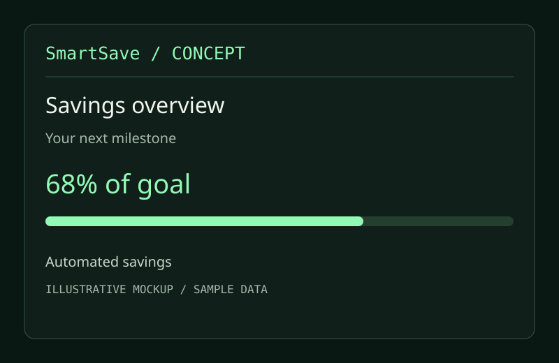

01 / FINTECH / CONCEPT PROJECTA simulated product concept. All explanations appear on screen.
Download video ↓AI-powered personal finance
SmartSave
A fintech application designed to help individuals build better saving habits and achieve their financial goals.
The problem
People need a clearer view of their savings and practical support to stay consistent.
Proposed features
- Automated savings
- Personalised financial insights
- Goal tracking
- AI-powered recommendations
Concept walkthrough (simulated project link)
A proposed user opens the savings overview, reviews the information, and chooses a relevant action. This portfolio demonstrates the concept through an illustrative mockup and a short concept video. It does not connect to AI, financial accounts, farm data, or security scanners.